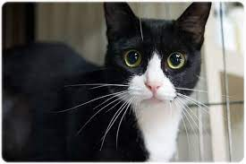

Koshot is the Korean word to describe the country’s domesticated mixed breed or mongrel cats. The breeds involved to make the Koshot are unknown, be they a blend of imported breeds or native Korean cats throughout hundreds of years.
To date, there are no known genetic studies to attempt pinning down proper ancestry to these felines. Unlike mixed breeds in other countries who are monitored from one extent to the other, there is no oversight at all concerning the Koshot cat.
The Koshot cats are recognized in art, pottery, and folklore dating back to the 8th century. Though other imported breeds populate many areas of Korea, the Koshot still holds claim to many rural areas.
